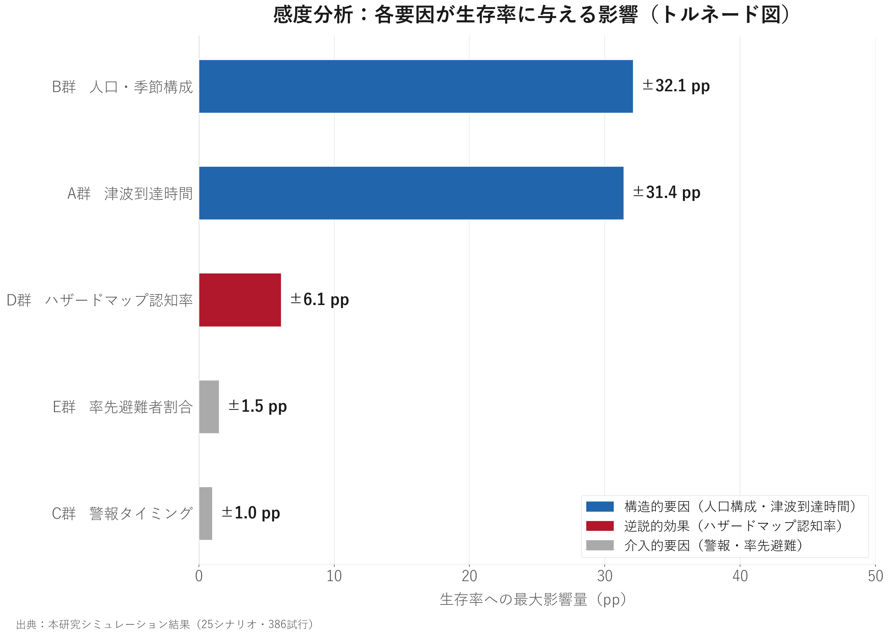
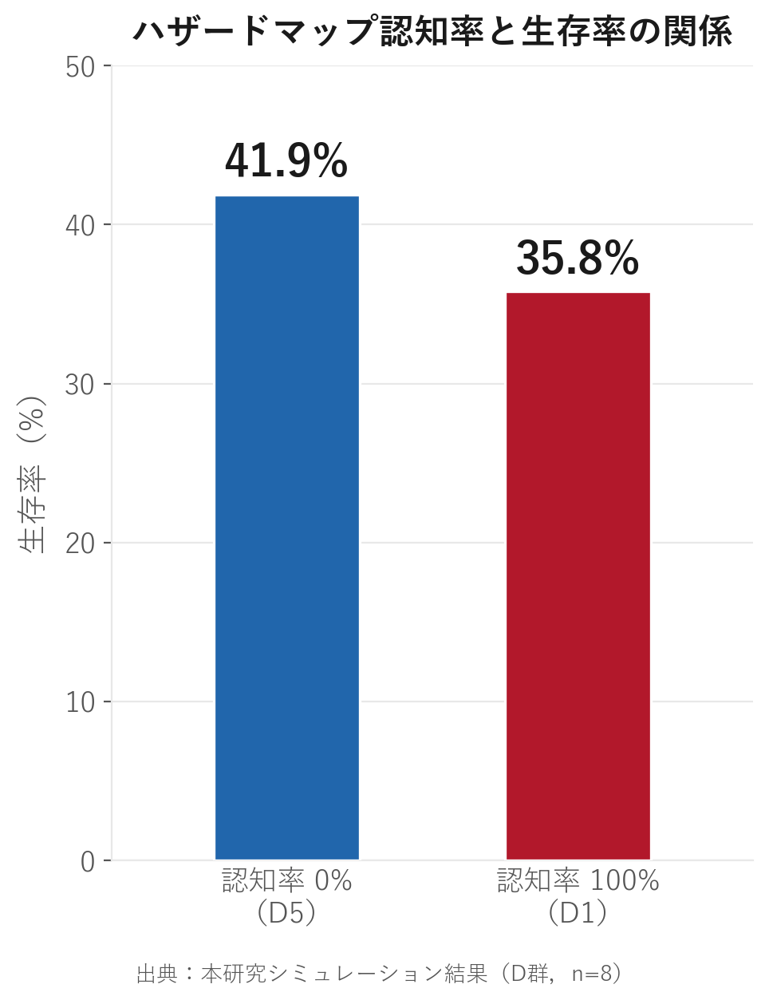

本ページは、高校生研究者が自主的に実施した 津波避難シミュレーション研究の概要をまとめたものです。 高校生の研究として信頼性には限界がありますが、 鎌倉市の防災に関わるご担当者の方に、 参考としてご覧いただければ幸いです。
以下の動画で、研究の背景・方法・主要な結果を順番にご説明しています。 先にこちらをご覧いただくと、以降の内容がより伝わりやすくなります。
※ 動画が表示されない場合は こちら から直接ご確認いただけます。
いずれも研究上の知見であり、実際の政策判断にあたっては 専門家によるさらなる検証が必要と考えています。
南海トラフ巨大地震による津波が到達まで14分という条件でシミュレーションを実施したところ、 全体の平均生存率は36.8%という結果になりました。 最も厳しい8分到達では26.9%、 オフシーズン条件では67.8%と、条件によって大きく変動します。
地域住民の生存率が85.1%であるのに対し、 一般来訪客の生存率は31.6%にとどまりました。 この約53ポイントの差は、土地勘の有無によるものと考えられます。
鎌倉市には観光客を含む多くの方が訪れる一方、 来訪者は避難ルートや避難所の場所を知らないケースが多く、 この格差が生じる要因となっています。

※ このシミュレーションにおける「ハザードマップ認知率」は、 スマートフォンのGPS・ナビゲーション機能の利用能力を示すパラメータです （紙のハザードマップの保有そのものとは異なります）。
この結果の解釈は慎重に行う必要がありますが、 シミュレーション上では、均一なナビゲーション情報を持つエージェントが 同じ最短ルートへ集中することで特定の出口ノードに渋滞が発生し、 生存率が低下する傾向が確認されました。
この結果は、均一な情報配布に加え、 混雑状況に応じた動的な経路案内の仕組みが必要である可能性を示唆しています。 ただしこの解釈にはさらなる検証が必要です。

以下はあくまで検討の一例として提示させていただくものです。 高校生の研究として信頼性の面で限界があることをご承知おきください。 ご判断はすべて担当者の方にお委ねいたします。
開発済みの多言語対応アプリ「TENDEN」のURLを、 鎌倉市の防災案内ページに掲載していただける可能性があればご検討いただければ幸いです。
TENDENアプリへのQRコードを印刷したカードを、観光案内所や主要避難所に置いていただく形が 考えられます。QRコードの素材はご提供できます。
シミュレーション結果（25シナリオ・386回）のデータをご参考として提供することもできます。 避難計画の検討や研究機関との連携の参考としていただければ幸いです。
シミュレーションの知見をもとに設計・開発した観光客向け津波避難支援アプリです。 スマートフォンから今すぐご確認いただけます。
https://masatosprojects.github.io/tenden-app/
使用した数理モデル：後藤・村上式（動的津波伝播）、Tobler関数（地形歩行速度）、 Klüpfelモデル（群衆密度による速度低下）。 空間データは国土地理院FG-GML、OpenStreetMap、国土交通省PLATEAUを統合して使用しています。
本研究は高校生の自主研究であり、専門家による査読・検証は現時点では限定的です。 研究論文（PDF）の詳細は下記の研究サイトよりご確認いただけます。
本研究にご関心をお持ちいただけましたら、 まずはメールにてご一報いただければと存じます。
ご返信をいただけた後に、研究資料の詳細送付や、 ご都合に合わせた説明の機会（30分程度を想定）についてご相談させてください。 もちろん、資料のご参照のみでも歓迎します。
高校生の研究として、できることには限りがありますが、 少しでもお役に立てれば幸いです。
メールで連絡する 高校生研究者 / KAMAKURA SIM Project